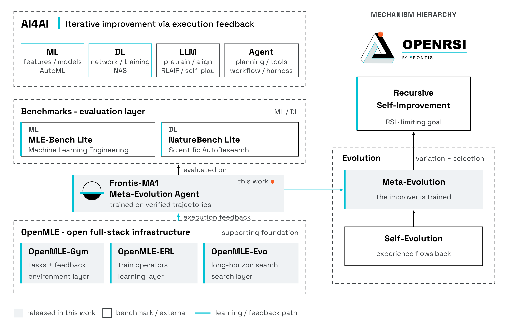
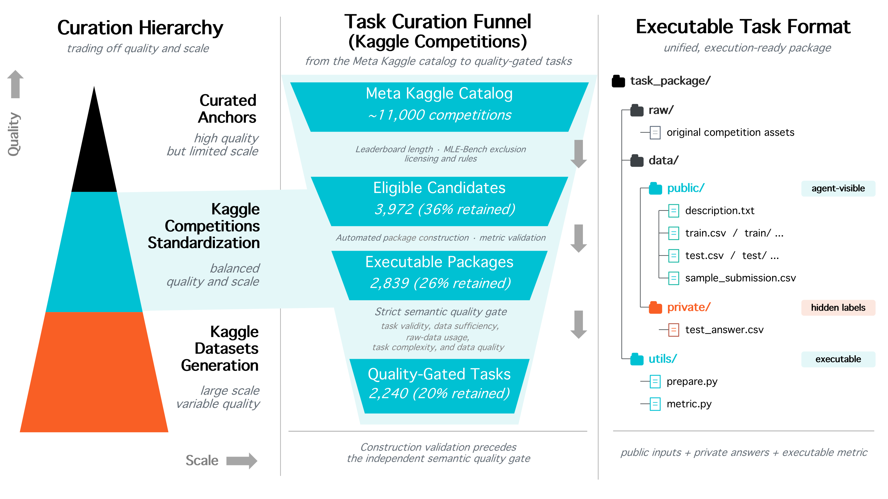
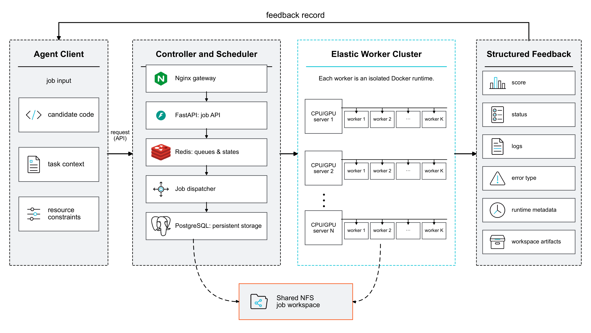
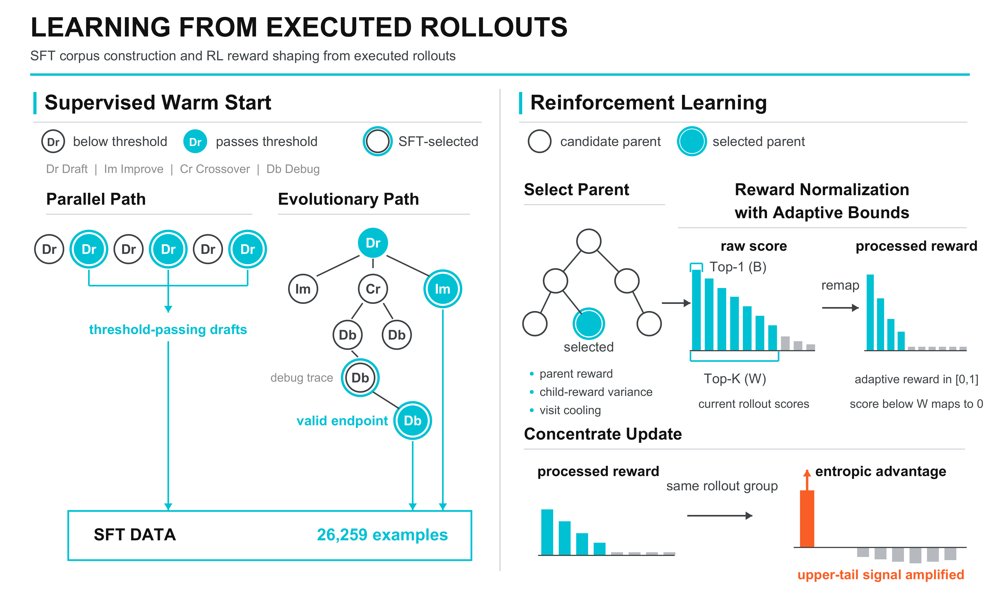
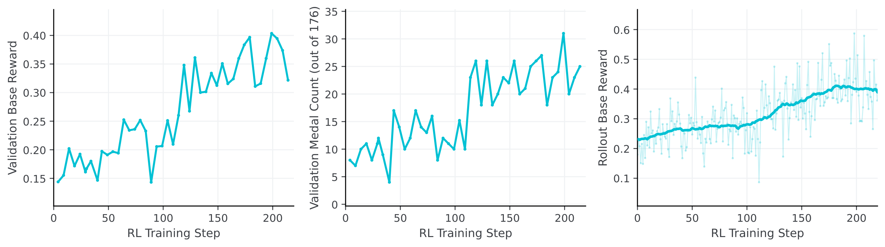
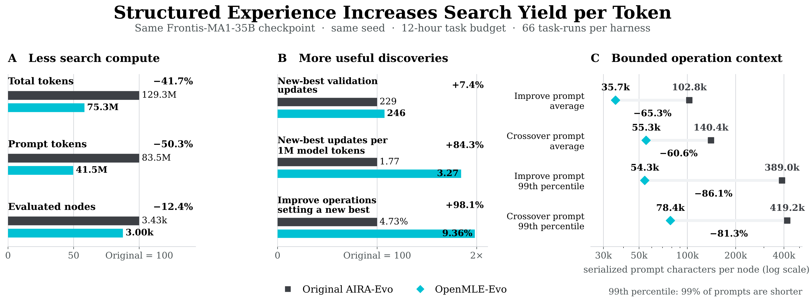
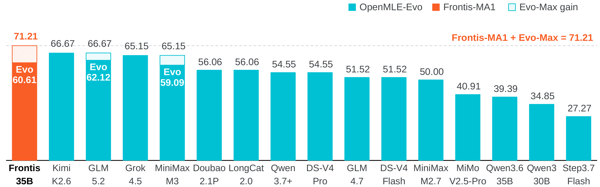
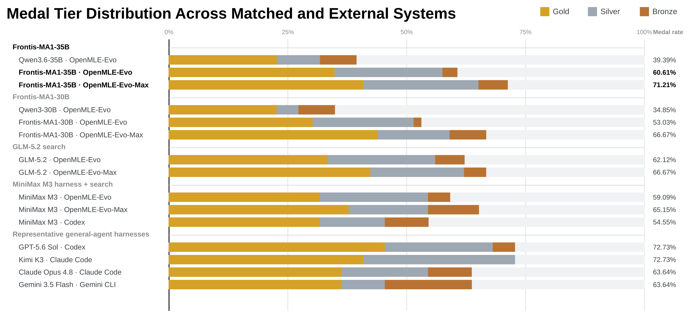
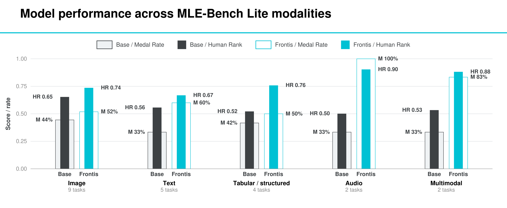

AI能力的增长不再只由人类工程师推动：AI系统正越来越会写代码、跑实验、搜设计、帮助构建下一代AI，这被称为AI for AI (AI4AI)，其终极目标是递归自我改进（RSI）：每个改进后的系统进一步提升生产其继任者的过程。杨军林新公司推出的OpenMLE，把机器学习工程（MLE）作为这一方向的第一个可执行测试床，打通了「可验证环境 → 执行反馈训练 → 推理时进化搜索」的完整闭环。 在MLE-Bench Lite上，用OpenMLE训练出的Frontis-MA1 35B将Medal Average从39.39% 提升到71.21%，超越GPT-5.5 + Codex，并让AI在真实科研任务NatureBench上迁移能力。
机器学习工程（MLE）是AI4AI最直接的落地形式：Agent必须为真实世界任务构建机器学习方案，并通过执行反馈迭代改进。一个轨迹往往从可运行的pipeline开始，经过反复实验推进到与人类或前沿模型方案竞争的解。每次迭代都消耗时间与算力，结果可能几十分钟或几小时后才到来：这让MLE成为研究Agent如何在延迟、噪音、异构反馈下改进AI系统的具体而严苛的测试床。
现有工作沿三条互补但重叠的线推进：一是基于结构化或进化搜索的推理时harness；二是构建可执行任务与环境；三是用执行反馈对MLE Agent进行后训练。但没有一个公开系统真正打通全部三环：直到OpenMLE将其统一在「环境构建 + Agent后训练 + 进化harness」一个验证过的工作流中。

OpenMLE训练并部署的模型被称为元进化Agent（meta-evolution agent）：被训练的模型同时是OpenMLE栈的产物和引擎，进化harness用它做搜索的变化引擎，形成「改进者本身被训练」的元进化闭环。核心模型Frontis-MA1 35B（Meta-evolution Agent，第1代）在此命名。
AI训练AI需要Agent通过可执行实验构建和改进AI系统，因此需要大规模、多样、高质量、覆盖数据检查/准备/建模/预测/评估的完整任务包。但现有基准在开放性、可执行多样性或覆盖度上受限，异构文件与评估协议又难以规模化。 静态任务集不足以支撑后训练或搜索：Agent生成的程序必须在受控资源下执行，产生可靠、信息丰富的反馈。
每个OpenMLE-Gym任务由五要素定义的环境实例构成：状态（任务说明/公共数据/隐藏评估器/资源预算/当前工作区）、动作（Agent提交的MLE程序及执行需求）、转移（沙箱执行：物化工作区、跑程序、产出有效提交时调用评估器）、观测（执行状态/分数/日志/错误类型/产物/运行时元数据）、奖励（评估器返回的可验证任务分数）。

环境通过三条来源路径构建，占据质量-规模曲线上互补的位置：人工精选锚点（从现有论文和基准手工挑选，置信度最高但规模受限）、Kaggle数据集（大幅拓宽覆盖，用MLE-Smith流程加工并做包级质控）、Kaggle竞赛（人类撰写的任务说明/评估指标/提交流程提供更强锚定，用Meta Kaggle目录规模化收集）。所有来源统一成共享的可执行任务包：原始资产放raw/、Agent可见描述/训练数据/测试输入放data/public/、隐藏答案隔离放data/private/、任务专用metric.py验证预测文件并返回标量反馈。
任务经过五维度语义质量过滤（任务有效性/数据充分性/原始数据使用/任务复杂度/数据质量）筛选退化样本、数据泄漏、标注错误，只保留严格的recommended判定。最终5758个质量门控任务：156人工精选锚点 + 3362 Kaggle数据集 + 2240 Kaggle竞赛，覆盖表格/文本/时间序列/图像等多种模态，11% 多模态，分类和回归占87%。
沙箱执行后端：集中调度器接收API请求、记录任务、追踪worker可用性、按资源需求分发到CPU/GPU Docker worker。每个worker物化隔离任务工作区、挂载任务数据和评估器、执行候选程序、把日志/提交/产物写回共享存储。返回六种反馈模式：成功完成/运行时错误/缺代码/缺提交/评分失败/超时，让Agent能区分「执行无效」和「任务表现弱」。
进化式AutoResearch用有限搜索预算内找到的最佳可执行程序作为评判标准。控制器可能调用Draft/Debug/Improve/Crossover成百上千次，所以模型必须学会的不仅是单次生成方案，而是随搜索展开反复修复、精炼、重组程序。后训练因此要同时扩大可达到的强程序集合，并改进推理harness组合的各变换算子。
核心设计原则是把模型学到的局部能力与推理时的搜索算法分离：不训练完整轨迹，而是训练一组可复用的程序变换算子（Draft/Improve/Debug/Crossover）。这避免稀疏的控制器监督，让同一组算子能在共享沙箱协议下被不同进化搜索流程组合。

执行锚定的监督微调（SFT）按任务逐题执行采样程序，保留有效且有分数样本，直到达标额度或用尽执行预算：容易任务提前结束，把更多尝试配给稀少成功任务，把验证算力导向仍能挖出监督的地方。双路径收集：并行路径独立采样执行完整Draft方案（17245全响应样例），进化路径对已执行程序应用Improve/Debug/Crossover（9014轨迹步样例），合计26259例SFT语料。
执行锚定的强化学习（RL）要解决异构分数可比性问题：不同任务可能优化准确率或log loss，即使对齐方向原始分数范围也不可比。OpenMLE先用固定任务边界定义有界基奖励，再根据每任务历史on-policy分数前沿推导自适应上界重映射，保留当前候选所在区域的分辨率。随后用熵优势浓聚上尾学习信号：让接近顶部的候选获得不成比例的正反馈，而非等量强化所有不失败的方案。

异步rollout移除掉队者：MLE RL主导时延来自执行候选程序而非token粒度验证，运行时跨任务差异大。同步批次中完成的组要等最慢的沙箱任务返回。OpenMLE让生成-执行组独立启动，训练器从队列消费每个完成的组，解耦策略更新与名义批次中最长任务。
选择有信息量的状态训练算子：RL不只选任务和算子，还要选算子作用其上的程序状态。OpenMLE用三项目适应度采样父程序：父程序奖励强度（利用）、子奖励方差（定位训练信号未消解区域）、访问冷却（防止单一最优垄断预算）。

测试时扩展（test-time scaling）在AI4AI中变成测试时学习：搜索必须把执行结果转化为可复用证据，改变它接下来探索什么。不是生成更多候选，而是提出、执行、从经验学习、适应未来扩展的长程闭环。 经验驱动的进化依赖两个耦合的科学问题：该扩展哪个节点（超越贪心分数最大化）？记忆如何构建，让算子收到可行动证据而非不断膨胀的轨迹？
结构化经验积累：每个候选经沙箱评估后生成节点级「经验卡」，确定性提取来源/性能/执行结果/资源占用；所有节点卡片聚合成任务级「经验板」，维护方法族统计、族内最优候选、欠探索方向、重复失败、分数趋势、父图。卡片+板防止节点级信号在扩展搜索空间里丢失。

经验引导的父选择：原AIRA-Evo几乎全靠归一化fitness派生父采样概率，倾向集中扩展已强节点。OpenMLE-Evo把经验卡的确定性元数据转为三因子：归一化验证分数s̄、相对最强父的正向改进 Δ̃、方法族新颖性 ν，组合成经验引导效用并按softmax采样下一父节点。同时保留高质量解、分配预算给有实质进步或引入欠探索方向的候选。
操作触发的记忆合成：原AIRA-Evo默认对每个评估节点急切调用LLM总结历史，浪费在从不被选中的节点上。OpenMLE-Evo分离确定性存储与LLM合成：沙箱评估后保留经验卡和板，延迟丰富自然语言记忆直到Improve/Crossover/Debug调用选定了相关节点，只对被选父节点及其检索的祖先/兄弟/错误尝试调用记忆模型并缓存。
算子条件上下文构建：选定父节点后构建小而算子特定的上下文，而非追加完整自由格式历史。Improve拼接节点确定性经验记录、近期祖先垂直轨迹、共享至少一个父节点的兄弟水平集（按三因子效用排序只留最有信息量的）；Crossover对双父分别应用并加方法族互补线索；Debug检索同错误签名的先前尝试。上下文还指定剩余搜索预算/步数/每次执行上限，让决策在实际计算约束下可行。
在官方22任务MLE-Bench Lite上，每任务固定12 GPU-小时（单张RTX 4090，12GB）预算：远小于MLE-Bench绝大多数报告的沙箱算力。报告三个聚合指标：有效提交率（22任务中出有效提交的比例）、奖牌平均（获任何Kaggle奖牌的任务比例）、人类排名（超越的人类榜参与者比例）。
训练与搜索的增益叠加：相同OpenMLE-Evo harness下，执行锚定后训练把Frontis-MA1 35B相对其Qwen3.6骨架的Medal Average提升21.22个百分点；伙伴模型30B在Qwen3上复现18.18个百分点。叠加OpenMLE-Evo-Max（蒸馏跨任务先验 + 异步多GPU并行搜索）进一步达到71.21%，超越GPT-5.5 + Codex 3.03个百分点，证明训练与搜索提供互补提升。

Harness层面：固定模型下对比，OpenMLE-Evo一致把相同模型转成比Claude Code / Codex等通用编码Agent harness更强的MLE系统。对Frontis-MA1 35B，相对原AIRA-Evo，Medal Average从53.03% 提升。
长程自我改进：OpenMLE-Evo持续改进远超第一个可执行解：后段Improve和Crossover操作把积累经验变成决定性性能增益，说明经验引导长程搜索把额外测试算力转化为持续进步而非冗余采样。leaf分类任务上后段操作贡献验证增益的85%，最终验证Human Rank 0.7713、保留集0.9455获Bronze；mlsp-2013音频上Improve+Crossover占验证改进的91.9%，验证0.7284、保留集0.8889获Silver。

方案上限：训练和Evo-Max不仅增加奖牌覆盖率，更把成功方案推向Gold：35B模型相对于外部系统超越Claude Opus 4.8 + Claude Code、Gemini 3.5 Flash + Gemini CLI，并匹配Kimi K3的Gold率。
把22个MLE-Bench Lite任务分成图像/文本/表格/音频/多模态五组后，Frontis-MA1 35B相对Qwen3.6在五组全部提升平均Human Rank，且从不降低组级Medal Rate；14个新增奖牌分布到每组的每个模态（+2/+4/+1/+4/+3），证明聚合增益不靠单一模态解释。
NatureBench验证域外迁移：NatureBench（90个容器化任务，来自六个科学领域的Nature期刊论文）隐藏测试真值与论文方法，用方向归一化相对差距比较异构科学指标。固定NatureBench适配器，Frontis-MA1 35B相对Qwen3.6在All S（Surpass-SOTA）提高10个百分点（3/10 vs 2/10）、All M（Match-SOTA）提高20点（7/10 vs 5/10）；固定基模型，OpenMLE-Evo适配器相对原AIRA-Evo在All S提高10点（2/10 vs 1/10）、All M提高30点（5/10 vs 2/10）。组合系统匹配GPT-5.4、GLM-5.1、MiniMax-M3的3/10 All S和7/10 All M，超越DeepSeek-V4-Pro、Claude Opus 4.6。

参考：https://arxiv.org/abs/2607.28568